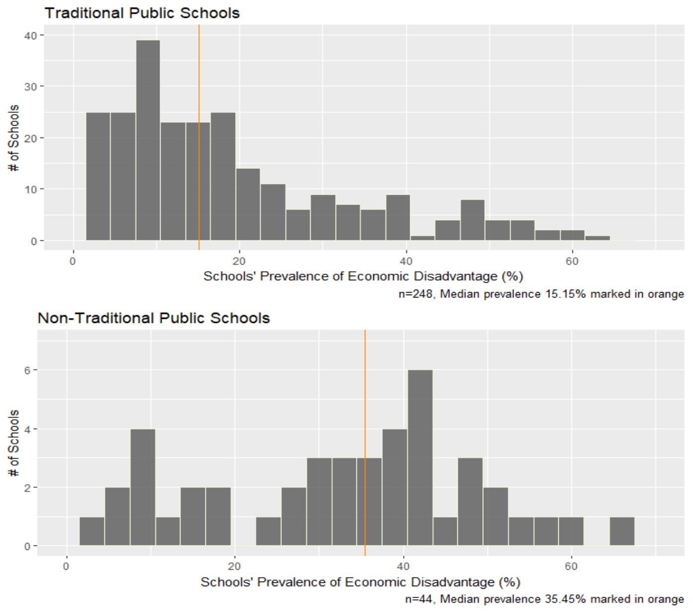
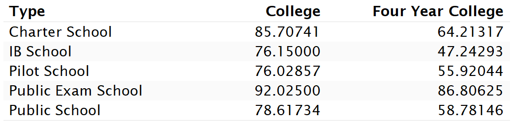
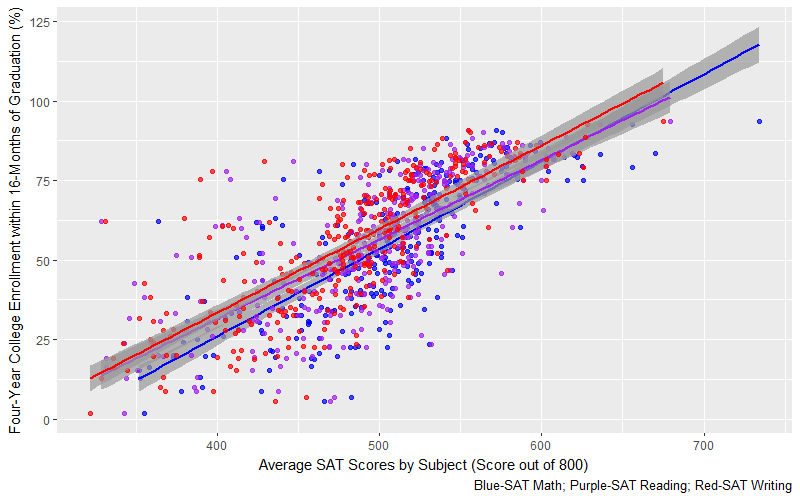
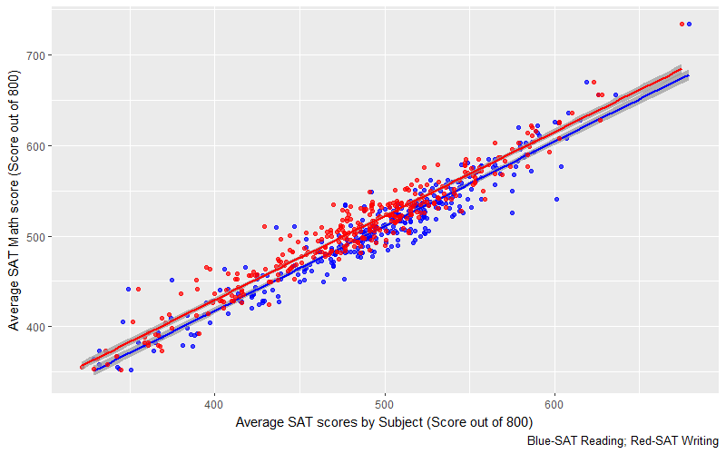
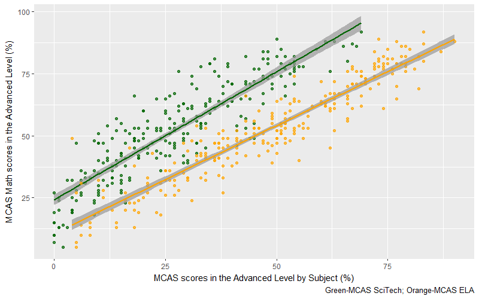
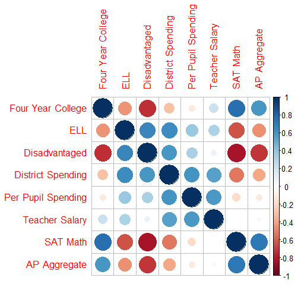
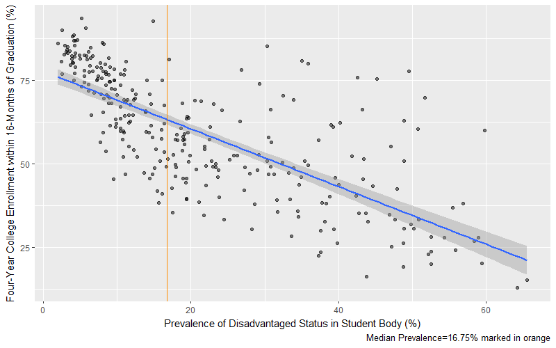
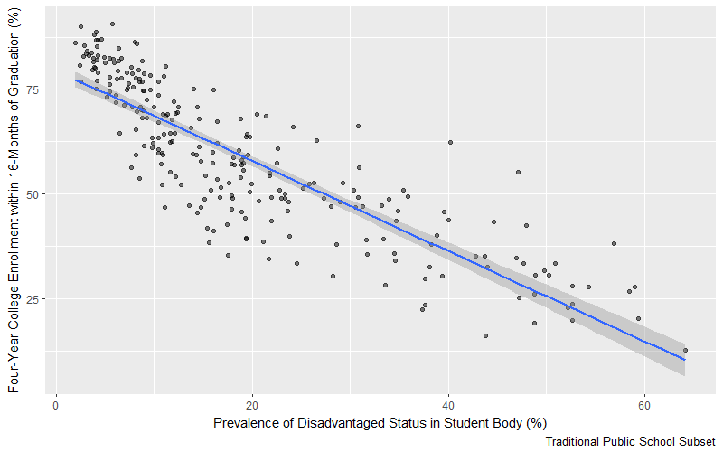
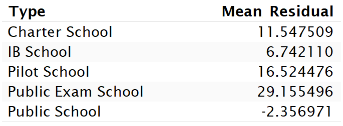
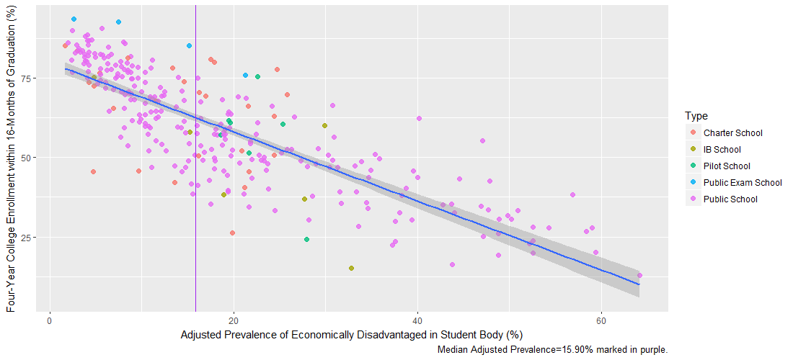

Massachusetts Public Schools
Motivation
Success often starts with quality education (and good data)
In 2013, the Commonwealth of Massachusetts public school system was comprised of 1,854 schools for 954,773 students, supported by an average per-pupil spending of $14,515. With the aim of continually improving the quality and accessibility of public education, the Commonwealth has introduced a variety of Non-Traditional public school models. The growing prevalence of Charter Schools, Exam Schools, Pilot Schools, and other Non-Traditional public schools coupled with ongoing education reform at all levels of administration makes management of the school system a complex and expensive process.
How do we measure quality of education?
This answer varies depending on the scope of the problem. At the student level, standardized testing and graduation rates are some obvious metrics. However, the measures of educational quality become more and more complex as we scope out to the public school system of 1,854 schools as a whole.
For the Commonwealth's interests, the quality of the school system needs to measured at almost every level of scope. To facilitate accountability at all levels of the education system (from individual teacher assessments to district-level financial reports) and to decide how to best invest the education budget, the Department of Elementary and Secondary Education systematically assesses many aspects of each public school. Every year, this wealth of data detailing finances, demographics, grades/exam outcomes, graduation/college enrollment outcomes, and much more, all of which are published publicly.
Plan
College Enrollment after Graduation
The measure of college enrollment sees utilization at many levels. This metric is often used to answer questions by parents, educators, school administrators, and policy makers:
- Will my child be better prepared for college admission at a Traditional school or at an Exam school?
- Is our school doing a good job of preparing our English Language Learner students for college admission?
- Which schools in our district provide the best college enrollment outcomes for specific student demographics?
- Do Charter Schools or Pilot Schools offer better higher education opportunities than Traditional schools?
Economic Disadvantage
Economic Disadvantage is widely recognized as an inhibitor of higher-education access, and has been an active topic in educational reform at many levels of administration. Massachusetts has taken steps towards overcoming this hurdle for many years, and is continuing to do so.
The Commonwealth has supported Public School models that are afforded special autonomy and regulations that are different than that of Traditional Public Schools. Are these Non-Traditional Public Schools effective and efficient? Do they actually serve the economically disadvantaged community? Are they associated with greater access to higher-education?
The Plan
To answer these questions, let's gather school and district level data from the Department of Elementary and Secondary Education's Statewide Report, explore it, and then use our findings to model the relationships between public school characteristics, economic disadvantage measures, and rates of four-year college attendance after graduation.
We'll be using R statistical software to achieve this.
Gathering Data
New datasets containing everything from graduation rates and MCAS scores to per-pupil expenditures and staff retention, this database provides valuable information that we can use to decode the vast and complex public school system.
For this analysis, we'll be using these datasets for the 2014-2015 academic year:
- Enrollment: Enrollment by Grade | Enrollment by Special Populations
- Graduation: Graduation Rates | Graduates Attending College
- Spending: Net School Spending | Per-Pupil Spending | Teacher Salaries
- Testing: MCAS Performance | SAT Performance | AP Performance
Data sourced from doe.mass.edu
Preparing Data
The datasets that we've gathered are chock full of information, and we need to pare it down to the information that's relevant to our objective and sort it by individual school. Unfortunately, the datasets are not immediately ready to analyze!
Directory Information
The datasets from the Statewide Report don't contain all of the school characteristics that could be useful. Directory datasets provide information such as the School Name, School Type (e.g. Charter), Title 1 Status, and Address, that we will need.
Missing Data
After joining our datasets and selecting all of the public high schools, we encounter sparsity that needs to be addressed:
- Financial Info: Many schools did not report expenditure or salary data
- AP Performance: A large number of schools did not report scores
- SAT Performance: A small number of schools did not report scores
- MCAS Performance: A large number of schools did not report scores
School Type
Some of this missing data actually occurs non-randomly! The Commonwealth's Education Laws and Regulations contains provisions that govern whether or not each school is required to report financial data or administer/report Exams, and the reporting requirements for our missing data are actually differential with respect to School Type. We'll want to pay special attention to the effect of School Type on outcomes in our analysis.
Exploration
Let's start generating very basic summaries of our data to see if anything stands out.
Schools and Districts
Excluding Alternative and Vocational Technical schools, Massachusetts enrolled 58,135 grade 12 students in the 2014-2015 academic year across 292 Public High Schools in 254 Districts. In the Boston district, which had an annual net expenditure of $911,415,109, there were 25 Public High Schools in the district. In contrast, the median district annual net expenditure was $35,729,039.
There were 5 Types of schools as defined under the Education Laws and Regulations:
- 248 Traditional Public Schools
- 27 Charter Public Schools
- 7 Public Pilot Schools
- 6 Public International Baccalaureate (IB) Schools
- 4 Public Exam Schools
Economic Disadvantage
The prevalence of Economic Disadvantage among all Public Schools ranges widely from 2.0% to 65.6%, with a median of 21.3%. Non-Traditional Schools tend to enroll a greater proportion of Disadvantaged students than the Traditional Schools do.
Graduation
The average graduation rate among all of the schools was 89.1%.
Among the graduates of every school, an average of 59.4% went on to attend a 4-year college within 16 months of graduation and an average of 20.0% went on to attend a 2-year college within 16 months of graduation, totalling nearly 80%.
In contrast, among the graduates of every school where the prevalence of Economic Disadvantage was above the median, only an average of 47.5% went on to attend a 4-year college.
When stratified by School Type, however, it becomes apparent that college enrollment is not independent of the School Type. Interestingly, we see that the Public Exam Schools and Charter Schools send more graduates to college than Traditional Schools do, but the IB Schools and Pilot Schools send less.
SAT and MCAS Performance
As we would expect, SAT Scores are highly correlated with Four Year College Enrollment, although the residuals do tend upward in the lower SAT Scores.
Interestingly, they also appear collinear.
The MCAS Scores are also highly correlated with Four Year College Enrollment. At a glance, the relationships look more homoscedastic. Note the markedly higher intercept for the Science and Technology subject.

The collinearity is not as strong as in the SAT measure.
Analysis
Let's try to fit a model to our data. Our included variables will be:
- Four Year College Enrollment (the response)
- Economically Disadvantaged Status
- English Language Learner Status
- Net Spending by District
- Per-Pupil Spending by District
- Teacher Salary
- SAT Math Performance
- AP Aggregate Performance
Correlation Plot
As we've already observed, there is strong correlation between schools' standardized exam performance and Four-Year College Enrollment of their graduates.
What we did not originally see, though, is that schools' prevalence of Economically Disadvantaged students is also highly correlated. In examing the temporality of Disadvantaged Status and the Exam measures, students' economic disadvantage most likely precedes Exams, which precede college enrollment. This should make it a good predictor for our initial model:
Simple Linear Regression Model
The simple linear regression model produces a fit with an adjusted R-squared statistic of 0.5353. A simple interpretation would be that increased prevalence of Economically Disadvantage status is associated with decreased Four-Year College enrollment. However, noticing that the average residuals tend upward as the predictor increases despite the right skew, we need to investigate the extreme values.
As it turns out, the 15 most positive residual values all come from Non-Traditional schools, while all but one of the 15 most negative residual values come from Traditional schools.
Now, let's try to fit the same model with Traditional Public Schools only.
The fit is greatly improved after excluding Non-Traditional Schools, with an adjusted R-squared statistic of 0.728. If we take another look at our initial model and distinguish the Type of schools, then we should be able to observe why this improvement occured.
Visualizing the Model by School Type

Here are the mean residuals by Type:

Some valuable insights can be drawn here:
- Traditional Public Schools with low prevalence of Economic Disadvantage (see the grouping where Economic Disadvantage prevalence <10%) produce some of the greatest proportions of graduates who will enroll into Four-Year Colleges. The response in this cluser of Public Schools has small variance.
- Compared to Traditional Public Schools with similar prevalence of Economic Disadvantage, the Non-Traditional Public Schools produce a greater proportion of graduates who will enroll into Four-Year Colleges overall, at the cost of more variance.
- Compared to Traditional Public Schools with low prevalence of Economic Disadvantage, almost all Non-Traditional Public Schools produce a smaller proportion of graduates who will enroll into Four-Year Colleges, with exception of the Public Exam Schools.
Refining the Model
Based on our analysis, the model estimates the Four-Year College Enrollment of traditional Public Schools quite well, but drastically underestimates the Four-Year College Enrollment of the non-traditional schools.
We will create an adjusted predictor value that will regularize only the Non-Traditional Schools Economic Disadvantage value towards the minimum.
The refined model using the adjusted predictor variable produces a fit with an adjusted R-squared statistic of 0.6621, a big improvement over the inital model's adjusted R-squared of 0.5353.
Conclusion
- Supplemental Nutrition Assistance Program (SNAP)
- Transitional Assistance for Families with Dependent Children (TAFDC)
- Department of Children and Families' (DCF) Foster Care Program
- MassHealth (Medicaid)
In these datasets, "Economically Disadvantaged" students are those who participate in any of these four state-administered programs:
Every school Type observes reduced Four-Year College Enrollment with increased Economic Disadvantage.
All of the Traditional Public Schools with low prevalence of Economic Disadvantage send a very high proportion of their graduates to Four-Year Colleges.
Non-Traditional Public Schools vary greatly in their Four-Year College Enrollment, but often perform better than Traditional Public Schools that have similar Economic Disadvantage.